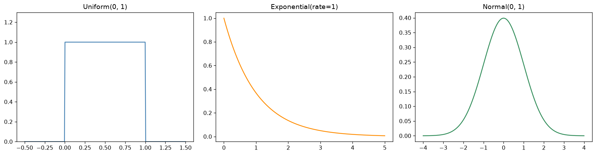
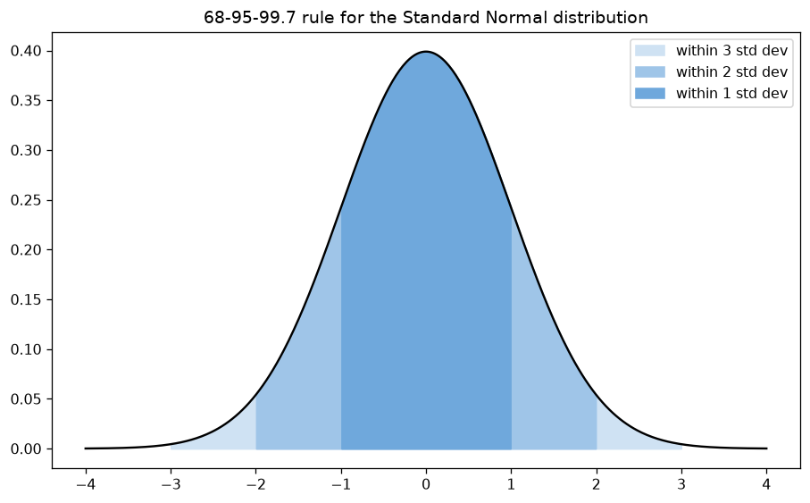

Chapter 6: Continuous Distributions and the Normal Distribution
The idea this chapter builds toward
For continuous quantities (height, time, error magnitude, pixel intensity, model weights), we can't ask "what's $P(X = 2.0)$ exactly" in the same way as discrete - there are infinitely many possible values, so the probability of landing on any exact number is essentially zero. Instead, we talk about the probability of falling in a range, and we describe the distribution with a density curve instead of a bar chart of exact probabilities. And then this chapter introduces the single most important distribution in statistics - the Normal (Gaussian) distribution - and, crucially, why it keeps appearing everywhere, which is not an accident.
Intuition, in one breath: For continuous quantities you never ask "exactly this value" - only "how much of the area under the curve sits over here," and the bell shape shows up because so much of nature is the sum of many small effects.
From PMF to PDF - why we need a new concept
For discrete variables (Chapter 5), the PMF gave you $P(X=k)$ directly, and all those probabilities summed to 1. For continuous variables, we instead use a Probability Density Function (PDF), written $f(x)$. Crucially, $f(x)$ is not a probability - it can even be greater than 1. What it represents is relative likelihood density: taller regions of the curve mean values near there are more likely than values under shorter regions. To get an actual probability, you compute the area under the curve over a range:
$$P(a \le X \le b) = \text{area under } f(x) \text{ between } a \text{ and } b$$
(Formally this area is computed via an integral, $\int_a^b f(x)\,dx$ - you will never need to compute one by hand in this book; scipy does it for you, and the intuition "area under the curve = probability of landing in that range" is all you need to carry forward.) Two consequences worth internalizing:
- $P(X = \text{exactly } 2.000000\ldots) = 0$ for any single exact point - there's no area under a curve at a single point with zero width. This is why with continuous data we always talk about ranges ("between 1.9 and 2.1") not exact values.
- The total area under the whole curve, across all possible values, must equal 1 (same "something happens" requirement as before).
The Uniform distribution - the simplest continuous case
Every value in a range $[a, b]$ is equally likely; the density is flat. Example: a random number generator producing any value between 0 and 1 with equal density. Useful as a baseline/building block (e.g., it's literally what np.random.random() samples from), and as the "maximally uninformative" prior in Bayesian statistics (Chapter 17) when you truly have no reason to favor one value over another within a range.
The Exponential distribution - waiting times
Models the time between independent, randomly occurring events (the continuous cousin of the Poisson distribution from Chapter 5 - in fact, if event counts per unit time follow Poisson, the time gap between consecutive events follows Exponential). Example: time between server requests, time until a component fails (if failure is memoryless - doesn't "wear out," which is a strong assumption, but a common starting model). Its defining and slightly counterintuitive property is being memoryless: if you've already waited 10 minutes for a bus with exponentially-distributed arrival times, your expected additional wait is exactly the same as if you'd just started waiting. (Real bus arrivals usually aren't memoryless - that's why this assumption is a modeling simplification, worth flagging when you use it.)
The star of the show: the Normal (Gaussian) distribution
What it looks like and why the formula is shaped the way it is
$$f(x) = \frac{1}{\sigma\sqrt{2\pi}} \, e^{-\frac{(x-\mu)^2}{2\sigma^2}}$$
You don't need to memorize this, but here's what each piece is doing:
- $(x - \mu)^2$: distance of $x$ from the center $\mu$, squared (so symmetric - equally far above or below the mean counts the same, and larger deviations are penalized much more, same reasoning as variance in Chapter 2).
- Dividing by $2\sigma^2$: controls how fast the density shrinks as you move away from the mean. Large $\sigma$ (big spread) means the penalty for being far from the mean kicks in more slowly → wide, flat bell curve. Small $\sigma$ → narrow, tall, peaked bell curve.
- $e^{-(\cdots)}$: exponentiating a negative, ever-growing penalty means the density drops off extremely fast (and smoothly) as you move away from the center - this specific exponential-of-negative-square shape is what gives the "bell" silhouette, with thin tails that approach but never quite touch zero.
- $\frac{1}{\sigma\sqrt{2\pi}}$: just a normalizing constant out front, chosen so that the total area under the whole curve works out to exactly 1 (recall: total probability must be 1). It's not a mysterious constant - it's whatever makes the areas add up correctly, and $\sqrt{2\pi}$ falls out of the calculus of that normalization (you never need to re-derive it).
The Normal distribution is fully described by just two numbers: $\mu$ (center) and $\sigma$ (spread). Shorthand notation: $X \sim N(\mu, \sigma^2)$ ("X is distributed Normal with mean mu, variance sigma-squared").
The 68-95-99.7 rule
For any Normal distribution, regardless of $\mu$ and $\sigma$: - About 68% of values fall within 1 standard deviation of the mean ($\mu \pm \sigma$). - About 95% fall within 2 standard deviations ($\mu \pm 2\sigma$). - About 99.7% fall within 3 standard deviations ($\mu \pm 3\sigma$).
This is an extremely useful mental ruler: if adult male heights are roughly Normal with $\mu=175$cm, $\sigma=7$cm, then about 95% of men are between $175 \pm 14 = [161, 189]$cm, and someone at 200cm is roughly 3.5 standard deviations out - genuinely rare. This rule is also exactly what "z-scores" (next section) and later "confidence intervals" (Chapter 11) and "p-values" (Chapter 12) are built from.
The z-score - putting any Normal variable on a universal scale
$$z = \frac{x - \mu}{\sigma}$$
Intuition: this converts "x" into "how many standard deviations away from the mean is x," regardless of the original units or scale. A z-score of +2 always means "2 standard deviations above the mean," whether you're talking about height, test scores, or model residuals. This is called standardizing and is exactly the "StandardScaler" / "z-score normalization" preprocessing step used constantly in ML to put features on comparable scales before training a model (a feature like "income in dollars" and "age in years" live on wildly different scales - standardizing both to z-scores lets algorithms sensitive to scale, like gradient descent or k-NN, treat them fairly).
The backstory - three different people independently bump into the same curve
Abraham de Moivre (1733, extending work on gambling problems posed to him by friends) was trying to approximate Binomial probabilities (Chapter 5) for large $n$, because computing $\binom{n}{k}p^k(1-p)^{n-k}$ by hand for, say, $n=1000$ is brutally tedious. Using Stirling's approximation (a formula for approximating large factorials), he showed that for large $n$, the Binomial PMF's shape, plotted as a function of $k$, collapses into a smooth curve that is exactly the Gaussian bell shape - this is actually a special case of the Central Limit Theorem (Chapter 8), discovered about 150 years before the CLT was understood in full generality. De Moivre wasn't trying to invent a new distribution for its own sake - he stumbled into it purely as a computational shortcut for a different, already-familiar distribution, which is a very common way important math gets discovered: as a convenient approximation that turns out to be deeper than the original problem.
Carl Friedrich Gauss (early 1800s, hence "Gaussian distribution") approached it from an entirely different direction: astronomy. He had many noisy telescope measurements of the same celestial object and wanted the mathematically "best" way to combine them into one estimate, and the "best" way to describe how errors scatter around the truth. He essentially worked backwards: he assumed the sample mean should be the best estimator of the true value (a very natural assumption) and asked "what error distribution would make the arithmetic mean the mathematically optimal (maximum likelihood, in the language of Chapter 10, though that formal framework came a century later) choice?" Solving that reverse-engineering problem, the answer that falls out is precisely the bell-curve formula from this chapter - so in Gauss's hands, the Normal distribution wasn't an empirical observation but the unique answer to "what error law makes averaging the right thing to do?" This is genuinely one of the most elegant derivations in the history of statistics, and it directly foreshadows Chapter 10's proof that the sample mean is the Gaussian MLE - Gauss essentially ran that exact argument in reverse to construct the Normal distribution in the first place.
Adolphe Quetelet (1830s-40s), a Belgian astronomer-turned-social-scientist, then applied Gauss's error-curve idea to a radically different domain: human bodies. He collected chest measurements of Scottish soldiers and heights of French conscripts and found they, too, followed this same bell curve - not measurement error around a single true star position, but genuine natural variation around an "average man" (l'homme moyen, his term) that he treated as a kind of biological ideal. This was controversial (and arguably sociologically naive) but it's the historical moment the Normal distribution jumped from "a tool for astronomers' measurement errors" to "a general pattern seen throughout nature" - which is also roughly when Francis Galton (Darwin's half-cousin) started using Quetelet's bell curve to study inherited traits, which directly leads into Chapter 7's covariance/correlation story.
Deriving the shape, one more layer deeper
Why specifically $e^{-x^2}$ and not some other fast-decaying function? Gauss's "reverse-engineering" argument above actually pins this down precisely: he required that estimating a location parameter from several independent noisy measurements by averaging them must give the maximum likelihood answer (the single most statistically justifiable way to combine repeated measurements). Working through what likelihood function has this property forces the log of the density to be a quadratic function of the error, $-c(x-\mu)^2$ for some positive constant $c$ - and exponentiating a (negative) quadratic is exactly $e^{-c(x-\mu)^2}$, the Gaussian shape. In other words: the Gaussian is the unique error distribution for which "just average your measurements" is mathematically optimal - which is a deeply satisfying explanation for why it is also the natural target of the Central Limit Theorem (averaging keeps producing it, because it's the fixed point of averaging, in a sense).
Reconstructing it yourself - where does $\sqrt{2\pi}$ actually come from?
You were told the $\frac{1}{\sigma\sqrt{2\pi}}$ out front is "whatever constant makes the area equal 1," which is true but unsatisfying - where does a circle constant ($\pi$) come from in a formula about a bell-shaped curve that has nothing visibly round about it? If your first guess is "it must come from some clever trick with circles," you're exactly right - let's see the trick.
The question is: what is $I = \int_{-\infty}^{\infty} e^{-x^2}dx$ (the plain, unnormalized bell curve's total area)? This integral has no elementary antiderivative - you cannot solve it by any standard calculus technique applied directly. The trick mathematicians actually use (first done rigorously by Laplace) is deliberately sideways: instead of computing $I$, compute $I^2$, written as a product of two copies using a dummy second variable $y$:
$$I^2 = \left(\int_{-\infty}^{\infty} e^{-x^2}dx\right)\left(\int_{-\infty}^{\infty} e^{-y^2}dy\right) = \int\int_{-\infty}^{\infty} e^{-(x^2+y^2)}\,dx\,dy$$
This double integral is now spread over the entire 2D plane, and $x^2+y^2$ is exactly the squared distance from the origin - which means this integral becomes dramatically easier in polar coordinates ($x^2+y^2 = r^2$, with area element $dx\,dy = r\,dr\,d\theta$):
$$I^2 = \int_0^{2\pi}\int_0^{\infty} e^{-r^2}\, r\,dr\,d\theta$$
The $r$ sitting next to $e^{-r^2}$ is exactly what makes this solvable by ordinary substitution ($u=r^2$), giving $\int_0^\infty e^{-r^2}r\,dr = \frac12$, and the leftover $\theta$ integral around a full circle just contributes a factor of $2\pi$ - literally, the circumference-related constant falls out because switching to polar coordinates to solve this specific integral means sweeping all the way around a circle. So $I^2 = 2\pi \times \frac12 = \pi$, meaning $I = \sqrt{\pi}$. Accounting for the actual $\sigma$ and the $\frac12$ in the real Gaussian exponent (a short rescaling step, not shown here) turns this $\sqrt\pi$ into the $\sigma\sqrt{2\pi}$ you've been dividing by all chapter. The $\pi$ in the bell curve is there because proving the area under a bell curve equals a fixed number secretly requires computing the area of a circle - one of the most delightful "where did that come from" moments in all of probability, and the reason this specific integral (the "Gaussian integral") is often called the most important integral in statistics despite having no closed-form antiderivative on its own.
More real-world examples of continuous distributions
- Normal: IQ scores (by construction, standardized to be roughly Normal), blood pressure readings across a population, measurement error in a calibrated scientific instrument, residual noise in sensor readings.
- Normal in ML specifically: neural network weight initialization is frequently drawn from a Normal (or related) distribution (Chapter 25 goes deep on why); residuals of a well-fit regression model are assumed approximately Normal (Chapter 14-15); many statistical tests (Chapter 12-13) explicitly assume Normally-distributed data or Normally-distributed sampling distributions via the CLT.
- Exponential: time between earthquakes in a region (approximately, over short windows), time until a lightbulb or machine part fails under a "constant hazard rate" assumption, time between arriving customer support tickets.
- Uniform: a well-shuffled deck's position of any specific card, pseudo-random number generation itself, rounding error when a continuous quantity is rounded to the nearest unit (uniformly distributed between -0.5 and +0.5 of the rounding unit, a fact used in signal processing noise analysis).
WHY is the Normal distribution everywhere? (the real payoff of this chapter)
This is the question most courses skip past, and it's the single most important "why" in this book, because the answer is the Central Limit Theorem, which we dedicate the entirety of Chapter 8 to. The one-paragraph preview: whenever a quantity is the result of adding up many small, independent, random influences (e.g., height is affected by many independent genes and environmental factors; measurement error is the sum of many tiny independent error sources; even a sample mean, as you saw bouncing around in Chapter 1's code, is itself a sum of many random data points divided by n), the sum of those influences tends toward a Normal distribution, almost regardless of what the individual influences' own distributions looked like. This is such a strong, surprising, and universal mathematical fact that it alone explains why bell curves show up in biology, measurement error, finance, and - critically for us - in the sampling distributions that make hypothesis testing and confidence intervals (Chapters 9-12) work at all. Hold that thought; Chapter 8 proves it to you visually.
Figures

The Uniform, Exponential, and Normal probability density functions side by side.

The 68-95-99.7 rule for the Standard Normal distribution: the shaded regions show the area (probability) within 1, 2, and 3 standard deviations of the mean.
Run it yourself
book/code/ch06_continuous_distributions.py plots the Uniform, Exponential, and Normal PDFs, shades the 68-95-99.7 regions under a Normal curve with actual computed areas, and converts a worked height example into z-scores to make the "universal scale" idea concrete.
python book/code/ch06_continuous_distributions.py
Why This Matters - In AI and In Everyday Life
In AI / machine learning:
- Neural network weight initialization and noise models: weights are commonly drawn from Normal distributions, and regression/generative models routinely assume Normally-distributed noise -- both leaning directly on this chapter.
- Sensor noise in robotics and autonomous vehicles: measurement error from LIDAR, GPS, or cameras is frequently modeled as Normal or Exponential (for time-between-events) noise feeding into a perception pipeline.
- Trajectory noise in diffusion models is Gaussian by construction: the forward noising process adds Normal noise step by step, and the reverse denoising process assumes that same Gaussian structure -- without the Normal distribution's convenient $e^{-x^2}$ form, diffusion's closed-form noising and denoising schedules would not exist.
- VAE latent spaces and weight initializers both lean on the Gaussian: variational autoencoders force the latent code toward a standard Normal prior (reparameterization trick samples a Normal), and nearly every weight-initialization scheme (Xavier, He) draws from a Normal or scaled-Normal -- this chapter's distribution is doing load-bearing work in generative modeling, not just descriptive statistics.
In everyday, non-AI life:
- Standardized test scores: SAT/IQ-style scores are explicitly constructed to be Normally distributed, and z-scores are how colleges and psychologists compare people across different tests.
- Waiting for a bus or a bank queue: the time between arrivals is a classic real-world Exponential-distribution scenario, memoryless property and all.
Worked example - by hand, larger
Suppose a regression model's residuals are approximately Normal with mean $\mu = 0$ and standard deviation $\sigma = 2$ (units are thousands of dollars). We want to reason about how far off a typical prediction is.
First, z-scores. A residual of $x = 3$ becomes $z = \frac{3-0}{2} = 1.5$. A residual of $x = -4$ becomes $z = \frac{-4-0}{2} = -2.0$. By the 68-95-99.7 rule, about 68% of residuals lie within $|z| \le 1$, i.e. within $\pm 2$ thousand; about 95% lie within $|z| \le 2$, i.e. within $\pm 4$ thousand; and about 99.7% within $|z| \le 3$, i.e. within $\pm 6$ thousand.
Now the wait-time side, using the Exponential distribution in the same chapter. Server requests arrive with an average rate of $\lambda = 0.5$ per second, so the time between requests is Exponential with mean $\frac{1}{\lambda} = 2$ seconds and variance $\frac{1}{\lambda^2} = 4$ (standard deviation $2$ seconds). What's the probability the next request takes more than 4 seconds? For Exponential, $P(X > x) = e^{-\lambda x}$, so $P(X > 4) = e^{-0.5 \times 4} = e^{-2} \approx 0.1353$ - about 13.5%. Check the memoryless property: having already waited 3 seconds, the chance of waiting another 4 is still $e^{-2} \approx 0.1353$, unchanged.
Finally the Uniform case: if rounding error is Uniform on $[-0.5, 0.5]$, the density is flat at $h = \frac{1}{0.5 - (-0.5)} = 1$, so any sub-interval of width 0.1 has probability $0.1 \times 1 = 0.1$.
Three continuous distributions, one shared habit: never ask for the probability of an exact value - always ask what fraction of the area (or of the mass) falls in the range you care about.
Check your understanding
- Why is $P(X = 2.0)$ meaningless (essentially zero) for a continuous random variable, but $P(1.9 \le X \le 2.1)$ is not?
- If $\sigma$ doubles while $\mu$ stays the same, what happens to the shape of the Normal curve, and why, tracing through the formula's logic?
- A person is 189cm tall, and height is $N(175, 7^2)$. Compute their z-score and describe what percentile-ish range that roughly corresponds to using the 68-95-99.7 rule.
Exercises
Exercise 1 - z-scores and the 68-95-99.7 rule
Model weights are initialized $N(0, 1)$. What fraction of weights fall between $-2$ and $+2$, and what is the z-score of a weight of $2.5$?
Show solution
Between $-2$ and $+2$ is exactly $|z| \le 2$, which by the 68-95-99.7 rule covers about 95% of weights. The z-score of $2.5$ is $z = \frac{2.5 - 0}{1} = 2.5$ - between 2 and 3 standard deviations out, so it sits in the outer ~5% tail, moderately unusual for a randomly initialized weight.Exercise 2 - Exponential waiting time
A queue's service times are Exponential with rate $\lambda = 0.25$ per minute. What is the probability a service takes more than 8 minutes, and what is the mean service time?
Show solution
Mean service time $= \frac{1}{\lambda} = \frac{1}{0.25} = 4$ minutes. The tail probability is $P(X > 8) = e^{-\lambda x} = e^{-0.25 \times 8} = e^{-2} \approx 0.1353$, about 13.5%. By memorylessness, having already waited 5 minutes, the probability of waiting another 8 minutes is still the same 13.5%.Exercise 3 - Conceptual: why we standardize features
Explain why a neural network benefits from z-score standardizing inputs, and what goes wrong if two features have wildly different scales.
Show solution
Standardizing converts each feature to z-scores, $\frac{x-\mu}{\sigma}$, so all features share a comparable scale regardless of their original units. Without it, a feature measured in large units (e.g., income in dollars) dominates the gradient magnitude relative to a small-unit feature (e.g., age), making gradient descent slow and ill-conditioned and biasing distance-based methods like k-NN. Standardizing restores a level playing field, which is exactly the same motivation as the z-score transformation used throughout classical statistics.What's next
Chapter 7 formalizes expectation (the true population mean, as a probability-weighted average) and variance for random variables in general, then extends to covariance and correlation - how two random variables move together - setting up the vocabulary needed for regression (Chapters 14-15) and multivariate statistics (Chapter 20).